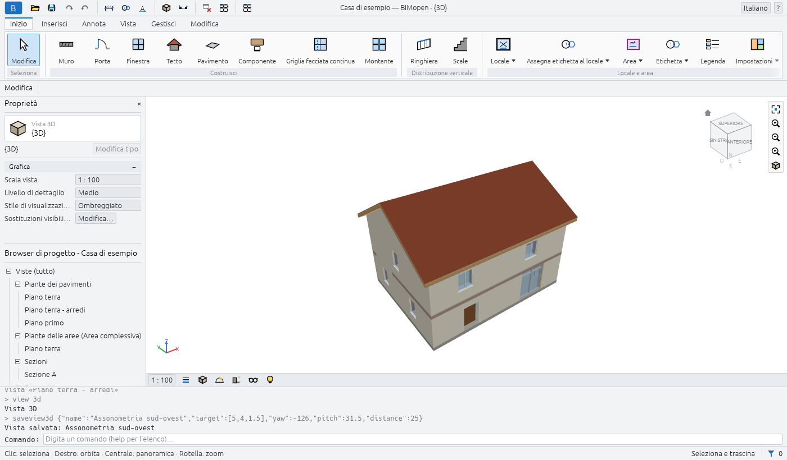

Manuale utente di BIMopen
BIMopen è un'applicazione open source per la modellazione delle informazioni di un edificio (BIM). L'edificio si modella con muri, porte, finestre, pavimenti, tetti, scale e locali, e i disegni derivano dal modello: piante, sezioni, prospetti, viste 3D, abachi e tavole sono viste dello stesso modello e cambiano insieme quando lo modifichi.
BIMopen funziona sul desktop (Linux, Windows, macOS) e in un browser web, e può essere comandato da una riga di comando e da agenti di intelligenza artificiale tramite MCP. La sua interfaccia parla sei lingue: italiano, inglese, tedesco, francese, spagnolo e arabo, quest'ultimo scritto da destra a sinistra.

Come è organizzato questo manuale
| Capitolo | Che cosa tratta |
|---|---|
| Primi passi | Installare e avviare BIMopen, il progetto di esempio e una prima piccola casa, da un progetto vuoto fino a una tavola |
| L'interfaccia | Il menu dell'applicazione, la barra di accesso rapido, la barra multifunzione, la barra delle opzioni, Proprietà, il Browser di progetto, l'area di disegno, la barra di stato, la riga di comando e come muoversi nelle viste |
| Progetti e file | Aprire, salvare, esportare e importare progetti |
| Selezione e modifica | Selezionare gli elementi e gli strumenti di modifica |
| Muri, porte e finestre | L'involucro dell'edificio e le sue aperture |
| Pavimenti, tetti, scale e componenti | Pavimenti, tetti, scale, ringhiere, facciate continue e componenti posizionati |
| Viste e grafica | Piante, sezioni, prospetti, viste 3D e come vengono disegnate |
| Annotazioni e dettagli 2D | Quote, testi, etichette, locali, aree e dettagli 2D |
| Tavole, abachi e stampa | Tavole, abachi, stampa e impostazioni del progetto |
| Riga di comando e MCP | Digitare comandi, bimopen-cli e il server MCP per gli agenti |
| Scorciatoie da tastiera | Ogni tasto e ogni scorciatoia digitata |
| Risoluzione dei problemi | Che cosa fare quando qualcosa non funziona come previsto |
I capitoli da Progetti e file a Tavole, abachi e stampa vengono scritti un'area alla volta: ciascuno è completato quando le funzioni che descrive sono state verificate una per una attraverso l'interfaccia. Fino ad allora elencano ciò che conterranno.
Convenzioni
- I nomi dell'interfaccia sono scritti in grassetto, come appaiono sullo schermo in italiano: la scheda Inizio, il pulsante Muro, la tavolozza Proprietà.
- Un percorso nell'interfaccia è scritto con le frecce: Inizio ▸ Costruisci ▸ Muro indica la scheda Inizio della barra multifunzione, il suo gruppo Costruisci, il suo pulsante Muro.
- I tasti sono scritti come Ctrl+Z; una scorciatoia digitata alla tastiera, lettera per
lettera, è scritta in maiuscolo, come
WA. - I comandi digitati alla riga di comando, e il loro risultato, sono scritti
così. I punti sonox,yin metri. - Note, suggerimenti e avvertenze sono messi in evidenza:
Note
Una nota aggiunge qualcosa che vale la pena sapere.
Tip
Un suggerimento mostra un modo più rapido o migliore.
Warning
Un'avvertenza segnala qualcosa che può far perdere lavoro o dare un risultato sbagliato.
Che cosa descrive questo manuale
Questo manuale descrive BIMopen così com'è oggi, e solo ciò che è stato provato nel programma. Quando una funzione non è ancora descritta, può comunque esistere: la roadmap elenca ciò che è disponibile e ciò che è previsto. L'intero manuale è anche un PDF, uno per lingua: l'ultima voce della navigazione, PDF, lo scarica.
BIMopen è software libero con licenza MIT o Apache 2.0. Autodesk e Revit sono marchi di Autodesk, Inc.; BIMopen è un progetto indipendente, non affiliato ad Autodesk.